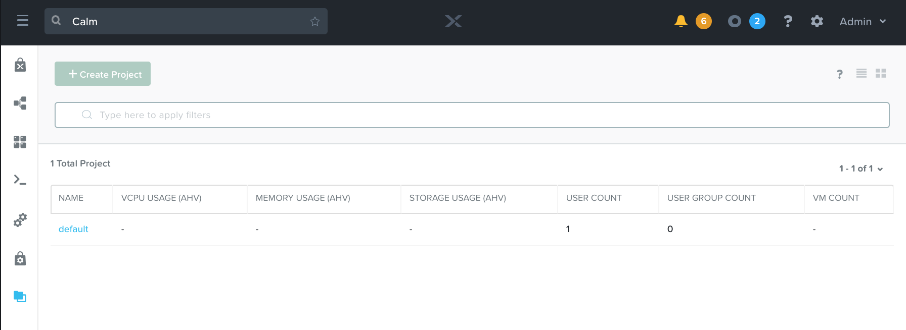
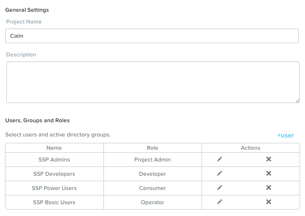
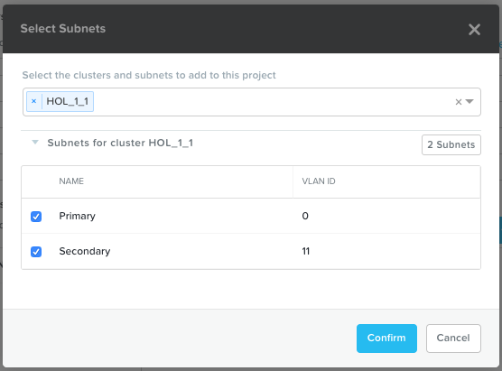
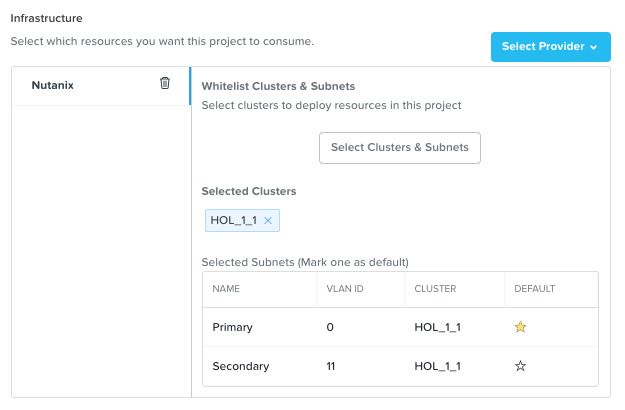

Calm: Projects¶
Overview¶
Note
Review calm_basics before proceeding with the lab to familiarize yourself with the UI and common terminology used in Nutanix Calm.
Estimated time to complete: 15 MINUTES
In this exercise you will configure a Project to contain your Blueprints and Applications created throughout the Bootcamp.
Creating A Project¶
Projects are the logical construct that integrate Calm with Nutanix’s native Self-Service Portal (SSP) capabilities, allowing an administrator to assign both infrastructure resources and the roles/permissions of Active Directory users/groups to specific Blueprints and Applications.
Within the Calm UI, Select Projects from the sidebar.
Click + Create Project
Fill out the following fields:
- Project Name - initials-Calm
- Description - initials-Calm
Under Users, Groups, and Roles, click + User.
Fill out the following fields and click Save:
- Name - SSP Admins
- Role - Project Admin
Click + User, fill out the following fields and click Save:
- Name - SSP Developers
- Role - Developer
Click + User, fill out the following fields and click Save:
- Name - SSP Power Users
- Role - Consumer
Click + User, fill out the following fields and click Save:
- Name - SSP Basic Users
- Role - Operator
Under Infrastructure, click the blue Select Provider button, and then Nutanix.
In the box that appears, click the white Select Clusters & Subnets button, and in the pop-up, select your AHV cluster. Once your cluster is selected, choose the Primary network, and if available, the Secondary network, and click Confirm.
Within the Selected Subnets table, select for the Primary network to make it the default virtual network for VMs in the Calm project.
Click Save.
Note
Click here to view the complete matrix of default SSP roles and associated permissions.
Takeaways¶
- Nutanix Calm is a fully integrated component of the Nutanix stack. Easily enabled, highly available out of the box in a Scale Out Prism Central deployment, and takes advantage of non-disruptive One Click upgrades for new features and fixes.
- By using different projects assigned to different clusters and users, administrators can ensure that workloads are deployed the right way each time. For example, a developer can be a Project Admin for a dev/test project, so they have full control to deploy to their development clusters or to a cloud, while having Read Only access to production projects, allowing them access to logs but no ability to alter production workloads.